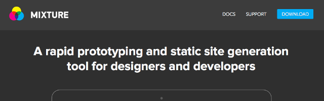

この記事はmixtureの古いバージョンで書かれたものです。またmixture自体はフリー化し、メンテナンスが行われていないため、使用する場合はご注意ください。できれば他のStatic Site Generatorに乗り換えることをお勧めします。
ブログ自体はWordPressを使用していますが、それ以外のディレクトリは静的HTMLを使っています。特にFireworksの拡張機能を配布しているページは、配布物が増えるたびにグローバルナビを書き換えたり、コンテンツの細かいところを書き換えたりとちょっと面倒です。ここで、気になっていたMIXTUREを使って再構築した備忘録ついでに。
- MIXTURE についてはこちら
- Mixture – A rapid prototyping and static site generation tool for designers and developers
MIXTUREはLiquidテンプレートエンジンを使った、静的サイトジェネレーターです。主に以下のような機能があります。
- Liquid と HAML テンプレートエンジン（内容自体にはMarkdownが使えます）
- プリプロセッサーのコンパイル（ Sass / LESS / Stylus / CoffeeScript / Compass ）
- CSS や Javascript の Mixifier
- 画像の最適化（OptiPNG / JPEGTran）
- デバッグ
- ローカルサーバー
- ライブリロード（デバイス同期あり：YouTube）
一部のツールは、通称「黒い画面」と格闘する必要がありますが、MIXTURE をインストールすればその必要もなく、インストーラーをポチポチするだけで簡単に使い始められます。また、こういったツールは OSX だけだったりするんですが、Windows にも対応しています。（ただし、 Win版は .Net Framework 4.5 が必要）
MIXTURE は頻繁にアップデートされているため、この内容の通りテストしても動かない場合がありますので、ご了承ください。
準備
まずは、MIXTURE をダウンロードします。
- MIXTUREのダウンロード
- Mixture – A rapid prototyping and static site generation tool for designers and developers
インストールして起動すると、最初にベースとする Boilerplate を選ぶ画面になります。Bootstrap を始め、BourbonやSassaparillaなども選択できますし、一から構築するための「Empty」もあります。
今回は再構築ですので、「Empty」を選んですすめました。
Boilerplateを選ぶと、フォルダを選ぶダイアログが表示されます。ここで選んだフォルダに、必要なファイルがダウンロードされるので、いちいちサイトからダウンロードするという手間がかかりません。
ダウンロードされたフォルダの中身
選んだフォルダには以下のような構成になります。（BoilerplateがEmptyの場合）
- assets
- 共通で使うリソースを入れるフォルダになります。
- models
- JSONファイルを置きます。このJSONは、他のファイルから変数っぽく呼び出して使うことができます。ある意味データベースみたいなものと思えばわかりやすいでしょうか。
- templates
- このフォルダには、レイアウトとコンテンツの元となるファイルを入れていきます。「includes」と「layouts」は後述します。
- mixture.json
- プロジェクトの名称や説明・プリプロセッサーの出力場所など、サイト全体の設定をします。
選んだBoilerplateによっては、compassフォルダがあったりBourbonフォルダがあったります。（あとpackage.pngとfavicon.icoがありますが、今更 説明は不要でしょう）
とりあえずプレビューしてみる
ダウンロードが終わり準備ができると、下図のようなウィンドウが表示されます。
左のメニューですが、
- ToDo
- ファイルの中でコメントに「TODO:hogehoge」と書いておくと、ここに表示されます。
- Errors
- エラー箇所が表示されます。“Houston, we have a problem!”と表示されるのが、何気に面白いですね。![][3]
- Directory
- 現在MIXTUREで監視しているディレクトリを開きます。
- View Locally
- ローカルサーバを立ち上げてプレビューできます。
- Publish
- MIXTUREサーバにアップロードします。
- View Online
- Publishでアップロードしたコンテンツをプレビューできます。
- Settings
- サイトの設定を行う、mixture.jsonを開きます（.json に割り当てられたアプリが開きます）。
- Tools
- HTMLへの変換と、Browser Stockでのプレビューができます。Browser Stockを使うには、アカウント設定でAPIの登録が必要なようです。
- Recent
- 最近使ったプロジェクトが表示されます。
- Open
- MIXTUREで管理されているフォルダを選んで開けます。管理外のフォルダを開いた場合、Boilerplateを選ぶ画面になります。
ですので、ひとまず「View Locally」でプレビューしてみましょう。MIXTUREがサーバ機能も持っているので、これを使ってプレビューすることができます。
このとき表示されているファイルが「templates/index.liquid」で、コンテンツはLiquidファイルとしてtemplatesに入れるようになっています。またサブディレクトリの作成も単純で、「templates/about/about.liquid」とフォルダとファイルを作れば、このファイルへのURLは「http://localhost:7774/about/about」となります。
index.liquidを開いて一部を変更・保存すると、「View Locally」中は、ライブリロードが有効になっているので、すぐに変更が反映されます。
レイアウトの変更
index.liquidはコンテンツだけの記述になっており、ベースとなるレイアウト情報は「templates/layouts/layout.liquid」に記述されています。さらにこのlayout.liquidを見て行くと、{% include “header” %}という記述があり、「templates/includes/header.liquid」を呼び出しているのがわかります。
このように、レイアウトは主にこの2種類のファイルを使って構築します。イメージとしては、layoutsがDreamweaverのテンプレート、includesがライブラリといった感じでしょうか。
グローバルモデルの活用
modelsフォルダにJSONファイルを置いておくことで、templatesフォルダ内にある同じ名前のLiquidファイルから値を呼び出すことができます。これはコンテンツ部分のLiquidファイルだけで呼び出せるのではなく、共通のレイアウト部分であるlayout.liquidやincludesフォルダ以下のファイルからでも呼び出すことが可能です。
つまり、ページ毎で内容は変わるけどレイアウトとして共通化できる部分は、コンテンツのLiquidファイルではなく、レイアウトのLiquidファイルに入れておくことができます。（いわゆる必要な要素を削除したとかの事故が起きにくい）
実際に使ってみる
「models/index.json」を作成し、以下のように記述します。
{
"twitter": "@littlebusters"
}
さらに、index.liquid のどこかに、
{{ model.twitter }}
と記述すれば、「@littlebusters」と出力されます（“model"はnamescpace）。完全にパターン化しておけば、JSONファイルの変更だけで、コンテンツを更新することも可能です。
画像内が {{ twitter }} になっていますが、正しくは {{ model.twitter }} です。
Liquid のテンプレートタグ
前項で実は記述してしまったんですが、Liquidテンプレートタグは以下のように書きます。
{{ "app.css" | asset_url | stylesheet_tag }}
こんな感じで記述をすると、“asset_url"の部分でapp.cssを探して相対パスを自動的に生成し、stylesheet_tagでlink要素が生成されます。asset_urlやstylesheet_tagの部分がフィルターで、渡した値に対していろいろと処理をしてくれます。
画像なんかでも、src属性の値として、
{{ "imagefilename.png" | asset_url }}
と記述してやれば、ファイルのパスを自動的に生成します。同じファイル名がある場合でも、正しいファイルにリンクされてました。（細かいテストはしてないので、どういう動作になっているかわかりませんが…）
他にも分岐（if）だったり、繰り返し（for）もあり、modelsと併用すれば、リストの書き出しなんかも簡単にできるようです。これ以外のタグやフィルターについては、ドキュメントを参照してください。
- MIXTURE のドキュメントサイト
- Welcome : Mixture Documentation
画像の最適化とCSSやJSのMinifier
画像やCSS・Javascriptをフォルダに入れるだけで、ファイルの最適化やMinifierが行われます。
MIXTUREで最適化されたPNGファイルを見てみましたが、不要な情報を削除しているだけのようです。本格的にファイルサイズを下げるなら他のツールが必要になりますが、とりあえずフォルダに入れるだけで最適化されるのは楽ですね。
CSSやJavascriptはホントに入れるだけで、hogehoge.min.jsやfugafuga.min.cssが生成されます。
この辺りの有効化・無効化は、mixture.jsonで設定できるようです。
書き出し
一通り組み上がったら、Toolsにある「Convert to HTML」をしてみましょう。「convert_html」というフォルダが生成され、その中に必要なリソースが保存されます。そのままサーバにアップすればコンテンツを公開することができます。ただし、asset_urlで取得しているものは、うまく取得できていないことがありますので、念のため確認しましょう（特にWindows版）。
というわけで、駆け足の説明になりましたが、とりあえず雰囲気でサクっと作ってみるとか、CMS までは入らないけど、少し簡単な方法で静的HTMLを作りたいという時の選択肢にはなるかなと思います。
クライアントにExcelなどのスプレッドシートからJSONを出力できるマクロを提供しておけば、MIXTUREと組み合わせてHTMLを書かなくてもページを作成するとか（大規模なサイトには向きませんが）、オレオレフレームワークを作ってみるとか、いろいろとできそうな感じです。
公開時は有償だったのですが、どうやらビジネスモデルに問題があったようでフリー化されました。アップデートは提供するということなんですが、内蔵されているSassが若干古くなってるので、本気で使うには少しつらいかもしれません…
間違いがありましたら、Twitter（@littlebusters） や Facebook ページ（creative tweet.）などにお知らせいただけると幸いです。